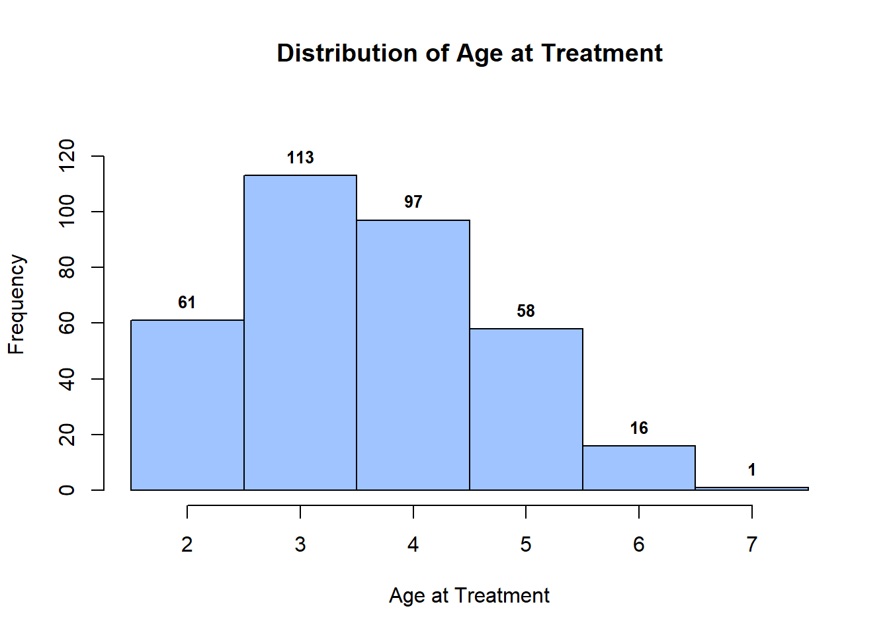
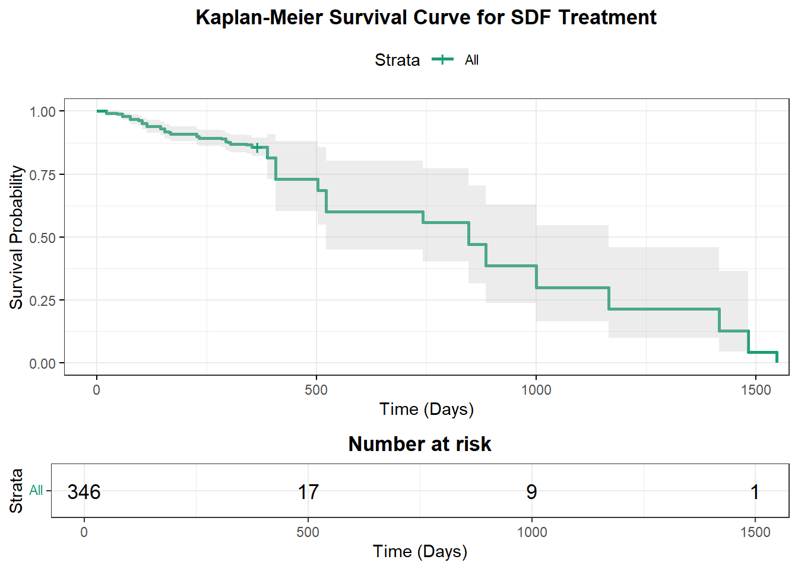
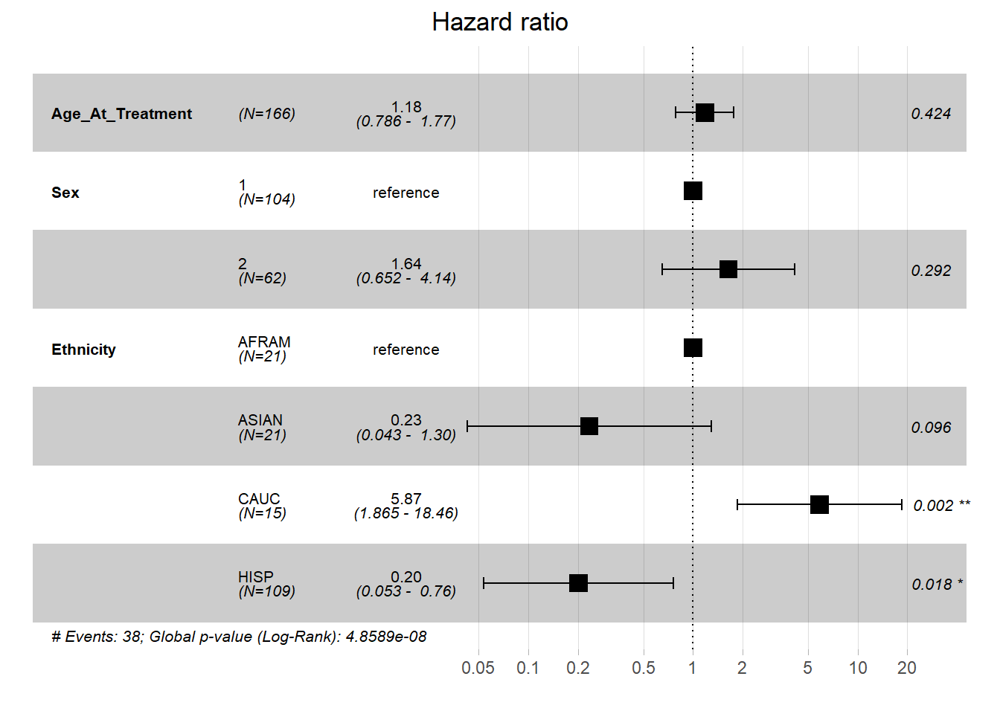

Last updated: 2026-09-01
Checks: 6 1
Knit directory: Collaborations/
This reproducible R Markdown analysis was created with workflowr (version 1.7.1). The Checks tab describes the reproducibility checks that were applied when the results were created. The Past versions tab lists the development history.
The R Markdown file has unstaged changes. To know which version of
the R Markdown file created these results, you’ll want to first commit
it to the Git repo. If you’re still working on the analysis, you can
ignore this warning. When you’re finished, you can run
wflow_publish to commit the R Markdown file and build the
HTML.
Great job! The global environment was empty. Objects defined in the global environment can affect the analysis in your R Markdown file in unknown ways. For reproduciblity it’s best to always run the code in an empty environment.
The command set.seed(20210523) was run prior to running
the code in the R Markdown file. Setting a seed ensures that any results
that rely on randomness, e.g. subsampling or permutations, are
reproducible.
Great job! Recording the operating system, R version, and package versions is critical for reproducibility.
Nice! There were no cached chunks for this analysis, so you can be confident that you successfully produced the results during this run.
Great job! Using relative paths to the files within your workflowr project makes it easier to run your code on other machines.
Great! You are using Git for version control. Tracking code development and connecting the code version to the results is critical for reproducibility.
The results in this page were generated with repository version 973b6ca. See the Past versions tab to see a history of the changes made to the R Markdown and HTML files.
Note that you need to be careful to ensure that all relevant files for
the analysis have been committed to Git prior to generating the results
(you can use wflow_publish or
wflow_git_commit). workflowr only checks the R Markdown
file, but you know if there are other scripts or data files that it
depends on. Below is the status of the Git repository when the results
were generated:
Ignored files:
Ignored: .Rhistory
Ignored: analysis/.Rhistory
Ignored: analysis/2022_Mar2_Marinho_cache/
Unstaged changes:
Modified: analysis/2026_0605_Cesar.Rmd
Note that any generated files, e.g. HTML, png, CSS, etc., are not included in this status report because it is ok for generated content to have uncommitted changes.
These are the previous versions of the repository in which changes were
made to the R Markdown (analysis/2026_0605_Cesar.Rmd) and
HTML (docs/2026_0605_Cesar.html) files. If you’ve
configured a remote Git repository (see ?wflow_git_remote),
click on the hyperlinks in the table below to view the files as they
were in that past version.
| File | Version | Author | Date | Message |
|---|---|---|---|---|
| Rmd | 973b6ca | han | 2026-09-01 | 9/1/2026 |
| html | 973b6ca | han | 2026-09-01 | 9/1/2026 |
| Rmd | e0fd1f5 | han | 2026-08-12 | 8/12/2026 |
| html | e0fd1f5 | han | 2026-08-12 | 8/12/2026 |
| Rmd | 6c5e6cd | han | 2026-08-06 | 8/6/2026 |
| html | 6c5e6cd | han | 2026-08-06 | 8/6/2026 |
| Rmd | 0bd6899 | han | 2026-07-28 | 7/28/2026 |
| html | 0bd6899 | han | 2026-07-28 | 7/28/2026 |
| Rmd | bef83a4 | han | 2026-06-17 | 6/17/2026 |
| html | bef83a4 | han | 2026-06-17 | 6/17/2026 |
summary(data$Age_At_Treatment) Min. 1st Qu. Median Mean 3rd Qu. Max.
2.00 3.00 3.00 3.59 4.00 7.00 cat("Age_At_Treatment:", "Mean:", mean(data$Age_At_Treatment), "SD:", sd(data$Age_At_Treatment), "\n")Age_At_Treatment: Mean: 3.589595 SD: 1.116052 # 1. Get min and max ages to define precise half-integer breaks
min_age <- floor(min(data$Age_At_Treatment, na.rm = TRUE))
max_age <- ceiling(max(data$Age_At_Treatment, na.rm = TRUE))
# Breaks at 0.5, 1.5, 2.5, 3.5 ... so integer 2 sits at [1.5, 2.5]
age_breaks <- seq(from = min_age - 0.5, to = max_age + 0.5, by = 1)
# 2. Draw histogram and save object
h <- hist(
data$Age_At_Treatment,
breaks = age_breaks,
main = "Distribution of Age at Treatment",
xlab = "Age at Treatment",
ylab = "Frequency",
col = "#A0C4FF",
border = "black",
xaxt = "n", # Turn off default x-axis to draw clean integer labels
ylim = c(0, max(hist(data$Age_At_Treatment, breaks = age_breaks, plot = FALSE)$counts) * 1.18)
)
# 3. Add custom integer x-axis ticks matching the exact centers
axis(1, at = min_age:max_age, labels = min_age:max_age)
# 4. Add counts over bars (only show numbers > 0 for cleanliness)
text(
x = h$mids[h$counts > 0],
y = h$counts[h$counts > 0],
labels = h$counts[h$counts > 0],
pos = 3,
font = 2,
cex = 0.8
)
| Version | Author | Date |
|---|---|---|
| 0bd6899 | han | 2026-07-28 |
summary(as.numeric(data$Days_From_SDF_To_Failure_Treatment), na.rm=T) Min. 1st Qu. Median Mean 3rd Qu. Max. NA's
22.0 114.0 227.0 390.5 406.0 1547.0 277 library(tidyverse)
library(janitor)
data.frame(Sex = data$Sex) %>%
mutate(Sex = factor(Sex, levels = c(1, 2, 0), labels = c("Male", "Female", "Unknown"))) %>%
tabyl(Sex) %>%
adorn_pct_formatting(digits = 2) Sex n percent
Male 195 56.36%
Female 135 39.02%
Unknown 16 4.62%data.frame(Ethnicity = data$Ethnicity) %>%
mutate(Sex = factor(Ethnicity)) %>%
tabyl(Ethnicity) %>%
adorn_pct_formatting(digits = 2) Ethnicity n percent valid_percent
AFRAM 21 6.07% 10.61%
ASIAN 22 6.36% 11.11%
CAUC 16 4.62% 8.08%
HISP 112 32.37% 56.57%
OTHER 25 7.23% 12.63%
UNKN 2 0.58% 1.01%
<NA> 148 42.77% -data.frame(Medicaid= data$Medicaid) %>%
mutate(Medicaid = factor(Medicaid)) %>%
tabyl(Medicaid) %>%
adorn_pct_formatting(digits = 2) Medicaid n percent
No 35 10.12%
Yes 311 89.88%data.frame(Had_SDF_Failure_Treatment= data$Had_SDF_Failure_Treatment) %>%
mutate(Had_SDF_Failure_Treatment = factor(Had_SDF_Failure_Treatment)) %>%
tabyl(Had_SDF_Failure_Treatment) %>%
adorn_pct_formatting(digits = 2) Had_SDF_Failure_Treatment n percent
No 277 80.06%
Yes 69 19.94%? Overall caries arrest rate (%)library(gmodels)
# Generate table with observed counts and expected values
CrossTable(
data$SDF_Site,
data$Had_SDF_Failure_Treatment,
expected = TRUE,
prop.r = FALSE,
prop.c = FALSE,
prop.t = FALSE,
prop.chisq = FALSE
)
Cell Contents
|-------------------------|
| N |
| Expected N |
|-------------------------|
Total Observations in Table: 346
| data$Had_SDF_Failure_Treatment
data$SDF_Site | No | Yes | Row Total |
--------------|-----------|-----------|-----------|
D | 52 | 11 | 63 |
| 50.436 | 12.564 | |
--------------|-----------|-----------|-----------|
E | 82 | 23 | 105 |
| 84.061 | 20.939 | |
--------------|-----------|-----------|-----------|
F | 82 | 24 | 106 |
| 84.861 | 21.139 | |
--------------|-----------|-----------|-----------|
G | 61 | 11 | 72 |
| 57.642 | 14.358 | |
--------------|-----------|-----------|-----------|
Column Total | 277 | 69 | 346 |
--------------|-----------|-----------|-----------|
Statistics for All Table Factors
Pearson's Chi-squared test
------------------------------------------------------------
Chi^2 = 1.961333 d.f. = 3 p = 0.5804709
# Generate table with observed counts and expected values
CrossTable(
data$Sex,
data$Had_SDF_Failure_Treatment,
expected = TRUE,
prop.r = FALSE,
prop.c = FALSE,
prop.t = FALSE,
prop.chisq = FALSE
)
Cell Contents
|-------------------------|
| N |
| Expected N |
|-------------------------|
Total Observations in Table: 346
| data$Had_SDF_Failure_Treatment
data$Sex | No | Yes | Row Total |
-------------|-----------|-----------|-----------|
0 | 14 | 2 | 16 |
| 12.809 | 3.191 | |
-------------|-----------|-----------|-----------|
1 | 153 | 42 | 195 |
| 156.113 | 38.887 | |
-------------|-----------|-----------|-----------|
2 | 110 | 25 | 135 |
| 108.078 | 26.922 | |
-------------|-----------|-----------|-----------|
Column Total | 277 | 69 | 346 |
-------------|-----------|-----------|-----------|
Statistics for All Table Factors
Pearson's Chi-squared test
------------------------------------------------------------
Chi^2 = 1.037676 d.f. = 2 p = 0.5952119
# Generate table with observed counts and expected values
CrossTable(
data$Ethnicity,
data$Had_SDF_Failure_Treatment,
expected = TRUE,
prop.r = FALSE,
prop.c = FALSE,
prop.t = FALSE,
prop.chisq = FALSE
)
Cell Contents
|-------------------------|
| N |
| Expected N |
|-------------------------|
Total Observations in Table: 198
| data$Had_SDF_Failure_Treatment
data$Ethnicity | No | Yes | Row Total |
---------------|-----------|-----------|-----------|
AFRAM | 17 | 4 | 21 |
| 16.758 | 4.242 | |
---------------|-----------|-----------|-----------|
ASIAN | 19 | 3 | 22 |
| 17.556 | 4.444 | |
---------------|-----------|-----------|-----------|
CAUC | 4 | 12 | 16 |
| 12.768 | 3.232 | |
---------------|-----------|-----------|-----------|
HISP | 93 | 19 | 112 |
| 89.374 | 22.626 | |
---------------|-----------|-----------|-----------|
OTHER | 25 | 0 | 25 |
| 19.949 | 5.051 | |
---------------|-----------|-----------|-----------|
UNKN | 0 | 2 | 2 |
| 1.596 | 0.404 | |
---------------|-----------|-----------|-----------|
Column Total | 158 | 40 | 198 |
---------------|-----------|-----------|-----------|
Statistics for All Table Factors
Pearson's Chi-squared test
------------------------------------------------------------
Chi^2 = 45.36624 d.f. = 5 p = 1.222238e-08
# Generate table with observed counts and expected values
CrossTable(
data$Medicaid,
data$Had_SDF_Failure_Treatment,
expected = TRUE,
prop.r = FALSE,
prop.c = FALSE,
prop.t = FALSE,
prop.chisq = FALSE
)
Cell Contents
|-------------------------|
| N |
| Expected N |
|-------------------------|
Total Observations in Table: 346
| data$Had_SDF_Failure_Treatment
data$Medicaid | No | Yes | Row Total |
--------------|-----------|-----------|-----------|
No | 33 | 2 | 35 |
| 28.020 | 6.980 | |
--------------|-----------|-----------|-----------|
Yes | 244 | 67 | 311 |
| 248.980 | 62.020 | |
--------------|-----------|-----------|-----------|
Column Total | 277 | 69 | 346 |
--------------|-----------|-----------|-----------|
Statistics for All Table Factors
Pearson's Chi-squared test
------------------------------------------------------------
Chi^2 = 4.937298 d.f. = 1 p = 0.02628309
Pearson's Chi-squared test with Yates' continuity correction
------------------------------------------------------------
Chi^2 = 3.995602 d.f. = 1 p = 0.04561916
age_failure_yes=data %>% filter(Had_SDF_Failure_Treatment=="Yes") %>% select(Age_At_Treatment) %>% pull()
age_failure_no=data %>% filter(Had_SDF_Failure_Treatment=="No") %>% select(Age_At_Treatment) %>% pull()
t.test(age_failure_yes, age_failure_no)
Welch Two Sample t-test
data: age_failure_yes and age_failure_no
t = -1.5301, df = 104.35, p-value = 0.129
alternative hypothesis: true difference in means is not equal to 0
95 percent confidence interval:
-0.52712100 0.06795708
sample estimates:
mean of x mean of y
3.405797 3.635379 time_to_failure_yes=data %>% filter(Had_SDF_Failure_Treatment=="Yes") %>% select(Days_From_SDF_To_Failure_Treatment) %>% pull()
time_to_failure_no=data %>% filter(Had_SDF_Failure_Treatment=="No") %>% select(Days_From_SDF_To_Failure_Treatment) %>% pull()
time_to_failure_no [1] "NULL" "NULL" "NULL" "NULL" "NULL" "NULL" "NULL" "NULL" "NULL" "NULL"
[11] "NULL" "NULL" "NULL" "NULL" "NULL" "NULL" "NULL" "NULL" "NULL" "NULL"
[21] "NULL" "NULL" "NULL" "NULL" "NULL" "NULL" "NULL" "NULL" "NULL" "NULL"
[31] "NULL" "NULL" "NULL" "NULL" "NULL" "NULL" "NULL" "NULL" "NULL" "NULL"
[41] "NULL" "NULL" "NULL" "NULL" "NULL" "NULL" "NULL" "NULL" "NULL" "NULL"
[51] "NULL" "NULL" "NULL" "NULL" "NULL" "NULL" "NULL" "NULL" "NULL" "NULL"
[61] "NULL" "NULL" "NULL" "NULL" "NULL" "NULL" "NULL" "NULL" "NULL" "NULL"
[71] "NULL" "NULL" "NULL" "NULL" "NULL" "NULL" "NULL" "NULL" "NULL" "NULL"
[81] "NULL" "NULL" "NULL" "NULL" "NULL" "NULL" "NULL" "NULL" "NULL" "NULL"
[91] "NULL" "NULL" "NULL" "NULL" "NULL" "NULL" "NULL" "NULL" "NULL" "NULL"
[101] "NULL" "NULL" "NULL" "NULL" "NULL" "NULL" "NULL" "NULL" "NULL" "NULL"
[111] "NULL" "NULL" "NULL" "NULL" "NULL" "NULL" "NULL" "NULL" "NULL" "NULL"
[121] "NULL" "NULL" "NULL" "NULL" "NULL" "NULL" "NULL" "NULL" "NULL" "NULL"
[131] "NULL" "NULL" "NULL" "NULL" "NULL" "NULL" "NULL" "NULL" "NULL" "NULL"
[141] "NULL" "NULL" "NULL" "NULL" "NULL" "NULL" "NULL" "NULL" "NULL" "NULL"
[151] "NULL" "NULL" "NULL" "NULL" "NULL" "NULL" "NULL" "NULL" "NULL" "NULL"
[161] "NULL" "NULL" "NULL" "NULL" "NULL" "NULL" "NULL" "NULL" "NULL" "NULL"
[171] "NULL" "NULL" "NULL" "NULL" "NULL" "NULL" "NULL" "NULL" "NULL" "NULL"
[181] "NULL" "NULL" "NULL" "NULL" "NULL" "NULL" "NULL" "NULL" "NULL" "NULL"
[191] "NULL" "NULL" "NULL" "NULL" "NULL" "NULL" "NULL" "NULL" "NULL" "NULL"
[201] "NULL" "NULL" "NULL" "NULL" "NULL" "NULL" "NULL" "NULL" "NULL" "NULL"
[211] "NULL" "NULL" "NULL" "NULL" "NULL" "NULL" "NULL" "NULL" "NULL" "NULL"
[221] "NULL" "NULL" "NULL" "NULL" "NULL" "NULL" "NULL" "NULL" "NULL" "NULL"
[231] "NULL" "NULL" "NULL" "NULL" "NULL" "NULL" "NULL" "NULL" "NULL" "NULL"
[241] "NULL" "NULL" "NULL" "NULL" "NULL" "NULL" "NULL" "NULL" "NULL" "NULL"
[251] "NULL" "NULL" "NULL" "NULL" "NULL" "NULL" "NULL" "NULL" "NULL" "NULL"
[261] "NULL" "NULL" "NULL" "NULL" "NULL" "NULL" "NULL" "NULL" "NULL" "NULL"
[271] "NULL" "NULL" "NULL" "NULL" "NULL" "NULL" "NULL"survival_data=data %>% select(Had_SDF_Failure_Treatment, Days_From_SDF_To_Failure_Treatment)
library(tidyverse)
library(survival)
library(survminer)
# 1. Clean and transform the dataset
survival_data_clean <- survival_data %>%
mutate(
# Convert 'NULL' strings to NA, then fill with max follow-up time (e.g., 365 days if no failure)
# Replace 'Total_Followup_Days' with your actual column for total study follow-up duration
Time = ifelse(Days_From_SDF_To_Failure_Treatment == "NULL",
365, # OR use a column like: Total_Followup_Days
as.numeric(Days_From_SDF_To_Failure_Treatment)),
# Convert event status to 1 (Event/Failure) and 0 (Censored/No failure)
Status = ifelse(Had_SDF_Failure_Treatment == "Yes", 1, 0)
)
# 2. Fit overall Kaplan-Meier survival model
km_fit <- survfit(Surv(Time, Status) ~ 1, data = survival_data_clean)
# 3. Plot the KM Curve
ggsurvplot(
km_fit,
data = survival_data_clean,
risk.table = TRUE, # Display risk table
pval = TRUE, # Display p-value (if comparing groups)
conf.int = TRUE, # Display confidence interval band
conf.int.style = "ribbon", # Use smooth ribbon for confidence interval
xlab = "Time (Days)",
ylab = "Survival Probability",
title = "Kaplan-Meier Survival Curve for SDF Treatment",
palette = "Dark2",
ggtheme = theme_bw() + theme(plot.title = element_text(hjust = 0.5, face = "bold"))
)
| Version | Author | Date |
|---|---|---|
| 973b6ca | han | 2026-09-01 |
survival_data=data %>% select(Had_SDF_Failure_Treatment, Days_From_SDF_To_Failure_Treatment, Age_At_Treatment, Sex, Ethnicity, Medicaid) %>% filter(Sex!=0 & Ethnicity!="UNKN" & Ethnicity!="OTHER")
library(tidyverse)
library(survival)
library(survminer)
# 1. Clean and prepare the dataset
survival_data_clean <- survival_data %>%
mutate(
# Convert 'NULL' strings to numeric, replacing NULLs with total follow-up time (e.g., 365)
# Replace 365 with your study's max observation time or actual follow-up column
Time = ifelse(Days_From_SDF_To_Failure_Treatment == "NULL",
365,
as.numeric(Days_From_SDF_To_Failure_Treatment)),
# Define event status: 1 = Event (Failure), 0 = Censored (No Failure)
Status = ifelse(Had_SDF_Failure_Treatment == "Yes", 1, 0),
# Convert categorical variables to factors
Sex = as.factor(Sex),
Ethnicity = as.factor(Ethnicity),
Medicaid = as.factor(Medicaid),
# Ensure Age is numeric
Age_At_Treatment = as.numeric(Age_At_Treatment)
)
# Fit Firth's penalized Cox model
library(coxphf)
firth_cox <- coxphf(
Surv(Time, Status) ~ Age_At_Treatment + Sex + Ethnicity + Medicaid,
data = survival_data_clean
)
summary(firth_cox)coxphf(formula = Surv(Time, Status) ~ Age_At_Treatment + Sex +
Ethnicity + Medicaid, data = survival_data_clean)
Model fitted by Penalized ML
Confidence intervals and p-values by Profile Likelihood
coef se(coef) exp(coef) lower 0.95 upper 0.95
Age_At_Treatment 0.1903436 0.2016958 1.2096651 0.81422473 1.7803609
Sex2 0.5290816 0.4647655 1.6973728 0.66469293 4.0776018
EthnicityASIAN -1.2332448 0.8471002 0.2913457 0.05262740 1.4457517
EthnicityCAUC 1.7536814 0.5812764 5.7758266 2.06969167 19.3586582
EthnicityHISP -1.5559822 0.6637069 0.2109821 0.06119047 0.8011218
MedicaidYes 1.6339476 1.4833393 5.1240625 0.69306540 654.1493475
Chisq p
Age_At_Treatment 0.9075092 0.3407761788
Sex2 1.2775354 0.2583577964
EthnicityASIAN 2.2899905 0.1302107219
EthnicityCAUC 11.6527087 0.0006410912
EthnicityHISP 5.0881430 0.0240899737
MedicaidYes 2.2494775 0.1336595275
Likelihood ratio test=44.40762 on 6 df, p=6.136242e-08, n=166
Wald test = 45.60942 on 6 df, p = 3.540811e-08
Covariance-Matrix:
Age_At_Treatment Sex2 EthnicityASIAN EthnicityCAUC
Age_At_Treatment 0.04068119 0.014995617 -0.05601440 -0.014129367
Sex2 0.01499562 0.216006967 -0.05652558 0.001248689
EthnicityASIAN -0.05601440 -0.056525579 0.71757877 0.263288866
EthnicityCAUC -0.01412937 0.001248689 0.26328887 0.337882298
EthnicityHISP -0.03165037 -0.102533834 0.36830805 0.251595496
MedicaidYes 0.01541846 0.005502757 0.08199026 0.049507439
EthnicityHISP MedicaidYes
Age_At_Treatment -0.03165037 0.015418456
Sex2 -0.10253383 0.005502757
EthnicityASIAN 0.36830805 0.081990264
EthnicityCAUC 0.25159550 0.049507439
EthnicityHISP 0.44050685 0.026068502
MedicaidYes 0.02606850 2.200295576# Re-fit model without Medicaid
cox_model_reduced <- coxph(
Surv(Time, Status) ~ Age_At_Treatment + Sex + Ethnicity,
data = survival_data_clean
)
summary(cox_model_reduced)Call:
coxph(formula = Surv(Time, Status) ~ Age_At_Treatment + Sex +
Ethnicity, data = survival_data_clean)
n= 166, number of events= 38
coef exp(coef) se(coef) z Pr(>|z|)
Age_At_Treatment 0.1656 1.1801 0.2071 0.800 0.42381
Sex2 0.4964 1.6427 0.4713 1.053 0.29224
EthnicityASIAN -1.4495 0.2347 0.8718 -1.663 0.09640 .
EthnicityCAUC 1.7695 5.8676 0.5848 3.026 0.00248 **
EthnicityHISP -1.6002 0.2019 0.6789 -2.357 0.01843 *
---
Signif. codes: 0 '***' 0.001 '**' 0.01 '*' 0.05 '.' 0.1 ' ' 1
exp(coef) exp(-coef) lower .95 upper .95
Age_At_Treatment 1.1801 0.8474 0.78645 1.7709
Sex2 1.6427 0.6087 0.65225 4.1373
EthnicityASIAN 0.2347 4.2609 0.04250 1.2960
EthnicityCAUC 5.8676 0.1704 1.86513 18.4594
EthnicityHISP 0.2019 4.9541 0.05335 0.7637
Concordance= 0.744 (se = 0.069 )
Likelihood ratio test= 42.41 on 5 df, p=5e-08
Wald test = 47.15 on 5 df, p=5e-09
Score (logrank) test = 91.49 on 5 df, p=<2e-16# This will now render perfectly in ggforest
ggforest(cox_model_reduced, data = survival_data_clean)
| Version | Author | Date |
|---|---|---|
| 973b6ca | han | 2026-09-01 |
#install.packages("powerMediation")
library(powerMediation)
# Example: Calculate N needed for an Odds Ratio of 2.0
# Assuming baseline event rate is 10% (0.1), Power = 80%, Alpha = 5%
# And an R2 of 0.2 with other covariates
size_needed <- SSizeLogisticCon(
p1 = 0.1, # Baseline probability of event
OR = 2.0, # Target Odds Ratio
alpha = 0.05, # Significance level
power = 0.80 # Desired power
#r2 = 0.2 # Correlation with other predictors
)
print(size_needed)hsieh_logistic_size <- function(p0, OR, alpha = 0.05, power, r2 = 0) {
# Get standard normal distribution Z-scores
z_alpha <- qnorm(1 - alpha / 2)
z_beta <- qnorm(power)
# Calculate baseline sample size for one variable (N1)
numerator <- (z_alpha + z_beta)^2
denominator <- p0 * (1 - p0) * (log(OR))^2
n1 <- numerator / denominator
# Apply multivariable inflation adjustment (1 / (1 - R2))
n_total <- n1 / (1 - r2)
return(ceiling(n_total)) # Round up to the next whole person
}
#hsieh_logistic_size(p0 = 0.1, OR = 2.0, alpha = 0.05, power = 0.80, r2 = 0.2)
# 2. Run the sequence from 10% to 90% prevalence
# (Using an example Odds Ratio of 2.0 and covariate R2 of 0.20)
p0_sequence <- seq(0.1, 0.9, by = 0.1)
sample_sizes <- hsieh_logistic_size(
p0 = p0_sequence,
OR = 2.0,
alpha = 0.05,
power = 0.90,
r2 = 0.4
)
# 3. Combine into a neat summary table
results_table <- data.frame(
Baseline_Prevalence = p0_sequence,
Total_Sample_Size_Needed = sample_sizes
)
results_table %>%
datatable(extensions = 'Buttons',
caption = "",
options = list(dom = 'Blfrtip',
buttons = c('copy', 'csv', 'excel', 'pdf', 'print'),
lengthMenu = list(c(10,25,50,-1),
c(10,25,50,"All"))))
sessionInfo()R version 4.3.2 (2023-10-31 ucrt)
Platform: x86_64-w64-mingw32/x64 (64-bit)
Running under: Windows 11 x64 (build 26200)
Matrix products: default
locale:
[1] LC_COLLATE=English_United States.utf8
[2] LC_CTYPE=English_United States.utf8
[3] LC_MONETARY=English_United States.utf8
[4] LC_NUMERIC=C
[5] LC_TIME=English_United States.utf8
time zone: America/Chicago
tzcode source: internal
attached base packages:
[1] grid stats graphics grDevices utils datasets methods
[8] base
other attached packages:
[1] coxphf_1.13.4 survminer_0.5.0 survival_3.8-3
[4] gmodels_2.19.1 janitor_2.2.1 VennDiagram_1.7.3
[7] futile.logger_1.4.3 condsurv_1.0.0 devtools_2.4.5
[10] usethis_3.1.0 tidycmprsk_1.1.0 gtsummary_2.0.4
[13] ggsurvfit_1.1.0 irr_0.84.1 lpSolve_5.6.23
[16] readxl_1.4.3 cowplot_1.1.3 matrixStats_1.5.0
[19] gridExtra_2.3 DT_0.33 rstatix_0.7.2
[22] ggpubr_0.6.0 kableExtra_1.4.0 lubridate_1.9.4
[25] forcats_1.0.0 stringr_1.5.1 dplyr_1.1.4
[28] purrr_1.0.2 readr_2.1.4 tidyr_1.3.1
[31] tibble_3.2.1 ggplot2_4.0.3 tidyverse_2.0.0
[34] rprojroot_2.0.4
loaded via a namespace (and not attached):
[1] formatR_1.14 remotes_2.5.0 rlang_1.1.2
[4] magrittr_2.0.3 git2r_0.35.0 snakecase_0.11.1
[7] compiler_4.3.2 gdata_3.0.1 systemfonts_1.2.1
[10] vctrs_0.6.5 profvis_0.4.0 pkgconfig_2.0.3
[13] fastmap_1.2.0 backports_1.5.0 ellipsis_0.3.2
[16] labeling_0.4.3 KMsurv_0.1-5 promises_1.3.2
[19] rmarkdown_2.29 markdown_1.13 sessioninfo_1.2.2
[22] tzdb_0.4.0 xfun_0.50.6 cachem_1.1.0
[25] jsonlite_1.8.9 later_1.4.1 broom_1.0.7
[28] R6_2.6.1 bslib_0.9.0 stringi_1.8.3
[31] RColorBrewer_1.1-3 car_3.1-3 pkgload_1.4.0
[34] jquerylib_0.1.4 cellranger_1.1.0 Rcpp_1.0.11
[37] knitr_1.49 zoo_1.8-14 httpuv_1.6.15
[40] Matrix_1.6-5 splines_4.3.2 timechange_0.3.0
[43] tidyselect_1.2.1 rstudioapi_0.17.1 abind_1.4-8
[46] yaml_2.3.8 ggtext_0.1.2 miniUI_0.1.1.1
[49] pkgbuild_1.4.6 lattice_0.21-9 shiny_1.10.0
[52] withr_3.0.2 S7_0.2.0 evaluate_1.0.3
[55] lambda.r_1.2.4 urlchecker_1.0.1 xml2_1.3.6
[58] survMisc_0.5.6 pillar_1.10.1 carData_3.0-5
[61] whisker_0.4.1 generics_0.1.3 hms_1.1.3
[64] commonmark_1.9.2 scales_1.4.0 gtools_3.9.5
[67] xtable_1.8-4 glue_1.8.0 tools_4.3.2
[70] data.table_1.16.4 ggsignif_0.6.4 fs_1.6.5
[73] crosstalk_1.2.1 Formula_1.2-5 cli_3.6.2
[76] km.ci_0.5-6 workflowr_1.7.1 futile.options_1.0.1
[79] viridisLite_0.4.2 svglite_2.1.3 gtable_0.3.6
[82] sass_0.4.9 digest_0.6.33 htmlwidgets_1.6.4
[85] farver_2.1.2 memoise_2.0.1 htmltools_0.5.8.1
[88] lifecycle_1.0.4 mime_0.12 gridtext_0.1.5
[91] MASS_7.3-60